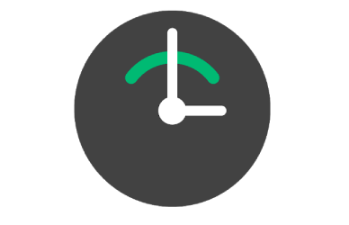

OUTLINE Watch Face
文字盤上で予定を瞬時に確認できるWear OS用ウォッチフェイス
主な使用技術（担当箇所）
OUTLINE Watch Face
文字盤上で予定を瞬時に確認できるウォッチフェイスです。
作成理由
混雑した電車内や歩行中などスマホを開くのが困難な状況でも予定を確認できるようにするため作成しました。
特徴
OUTLINEは文字盤上で時刻と予定が確認できます。
アナログ表示された文字盤と帯状に表示された予定から瞬時に予定までの時間を認識できます。
予定や帯の色はGoogle Calendarと同期しているため、
普段通りに予定を追加するだけで手元でも予定を認識可能にしています。